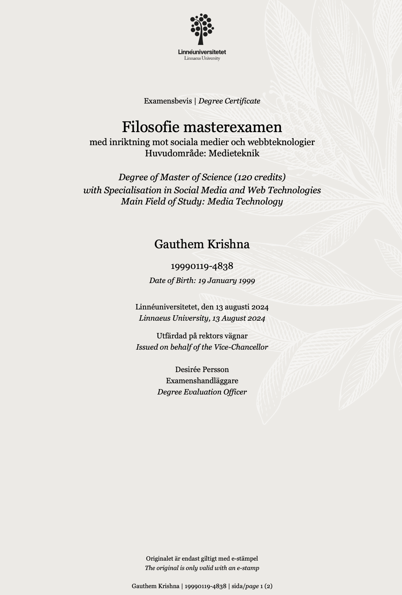
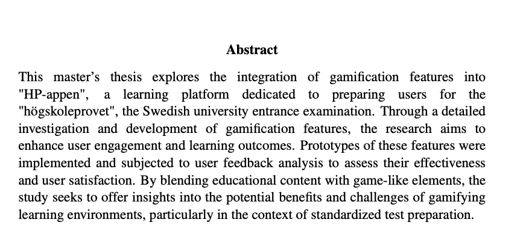

Overview
For my Master's thesis in Media Technology, I collaborated with HP-appen, a Swedish EdTech company preparing students for the högskoleprovet (Sweden’s university entrance exam). The aim was to explore and evaluate how gamification could enhance motivation, retention, and learning outcomes on a digital education platform.
I was responsible for conducting in-depth user research and translating those insights into actionable design improvements. The research shaped the creation of interactive gamified features such as streaks, levels, badges, leaderboards, and challenges, all geared toward improving learner engagement while preserving educational value.


Research Strategy
I adopted a mixed-methods approach, combining both qualitative and quantitative research to validate design decisions and ensure alignment with user expectations and platform goals.
Qualitative Methods:
- User Interviews with students to identify motivations, learning challenges, and feedback on early concepts
- Workshops with stakeholders to synthesize user pain points and ideate design solutions
- Proto-persona Development based on interview patterns and user segmentation
- User Journey Mapping to visualize learner behaviors and emotional touchpoints
Quantitative Methods:
- Surveys to measure learner attitudes toward gamification, perceived value, and usability
- Pirate Metrics (AARRR) to track user behavior: acquisition, activation, retention, referral, and revenue
- SWOT Analysis to benchmark HP-appen against competitors and identify areas of opportunity
- Feature Prioritization Matrix to identify which gamification elements to keep, refine, or discard
Design Process:
The research insights were translated into iterative design outputs across the following stages:
- Wireframing & User Flow Mapping to define structural and behavioral patterns
- Mid- and High-Fidelity Prototypes created in Figma
- Interactive Testing Sessions with actual users to validate interaction and motivation design
- Feedback Loop Integration to continuously refine the experience based on data and interviews
Designs prioritized accessibility (guided by WCAG guidelines), visual clarity, and gamified learning mechanisms that did not distract from core educational goals.
Predicted Outcomes:
The thesis and implementation are expected to reveal a strong theoretical correlation between well-balanced gamification and potential improvements in learner motivation, participation, and retention. Anticipated key outcomes include:
- Increased Time-on-Platform driven by gamified engagement loops
- Higher Daily Active Users (DAU) encouraged through streak and challenge mechanics
- Identification of clear user preference trends that inform the removal of non-performing features
- Enhanced student feedback on clarity, usability, and motivation resulting from game-inspired UI elements
- Development of a framework for integrating gamification without compromising educational depth
Reflections:
This project strengthened my ability to combine user-centered research, data analysis, and creative design into a cohesive product strategy. It gave me hands-on experience applying gamification theory in real-world product development and taught me how to balance innovation with usability and purpose.